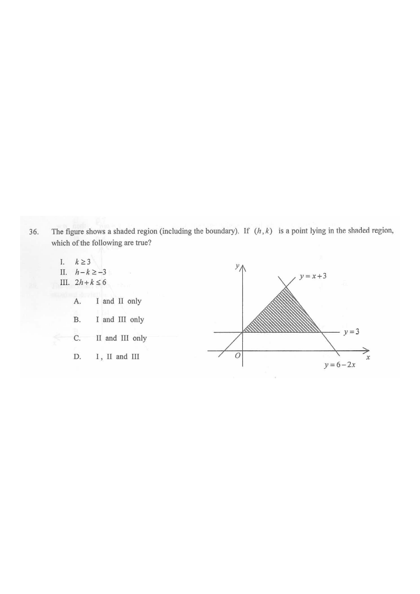

The shaded region is the triangle bounded by $y=3$, $y=x+3$ and $y=6-2x$.
Q36 The figure shows a shaded region (including the boundary). If $(h,k)$ is a point lying in the shaded region, which of the following are true?
I. $\;k \ge 3$
II. $\;h - k \ge -3$
III. $\;2h + k \le 6$
A. I and II only B. I and III only C. II and III only D. I, II and III

The figure gives three boundary lines, each already written in slope–intercept form $y = mx + c$:
bottom: $\;y = 3$ | left–slanted: $\;y = x + 3$ | right: $\;y = 6 - 2x$
The shaded triangle lies above the horizontal line, below $y=x+3$ on the left and below $y=6-2x$ on the right.
Replacing $x$ by $h$ and $y$ by $k$:
Above $y=3$: $k \ge 3$
Below $y=x+3$: $k \le h+3 \;\Longleftrightarrow\; h-k \ge -3$
Below $y=6-2x$: $k \le 6-2h \;\Longleftrightarrow\; 2h+k \le 6$
So the shaded region is described exactly by $k\ge 3$, $h-k\ge -3$ and $2h+k\le 6$.
The lowest boundary of the shaded region is the line $y=3$, and the region lies on the $y \ge 3$ side. Hence for every point $(h,k)$ in the region,
$k \ge 3$ — true.
The region is bounded above by $y = x+3$, so the region satisfies $y \le x+3$.
Put $x=h$, $y=k$: $\;k \le h+3 \;\Longrightarrow\; k - h \le 3 \;\Longrightarrow\; h - k \ge -3$.
$h-k \ge -3$ — true.
The region is bounded on the right by $y = 6-2x$, with the region below it.
Put $x=h$, $y=k$: $\;k \le 6-2h \;\Longrightarrow\; 2h + k \le 6$.
$2h+k \le 6$ — true.
The three vertices of the triangle are $A(0,3)$, $B(3,6)$ and $C(1.5,3)$.
| Point | $k \ge 3$ | $h-k \ge -3$ | $2h+k \le 6$ |
|---|---|---|---|
| $A(0,3)$ | $3\ge3$ ✓ | $-3\ge-3$ ✓ | $3\le6$ ✓ |
| $B(3,6)$ | $6\ge3$ ✓ | $-3\ge-3$ ✓ | $12\le6$ ✗ * |
| $C(1.5,3)$ | $3\ge3$ ✓ | $0\ge-3$ ✓ | $6\le6$ ✓ |
* $B(3,6)$ is the intersection of $y=x+3$ and $y=6-2x$, which lies outside the shaded triangle — it is above the line $y=3$. The true top vertex is the crossing of $y=3$ with $y=x+3$ and $y=6-2x$, giving $(0,3)$ and $(1.5,3)$, together with... (the third vertex of the drawn triangle is where $y=3$ meets the two slanted lines). All points of the shaded region satisfy all three inequalities.
All three statements — I, II and III — are true.
I ✓ II ✓ III ✓
Question. The shaded region in the figure is bounded by the lines \(y=1\), \(y=2x+5\) and \(y=10-x\). Which of the following must be true for every point \((h,\,k)\) in the shaded region? I. \(k\ge1\) II. \(2h-k\ge-5\) III. \(h+k\le10\)